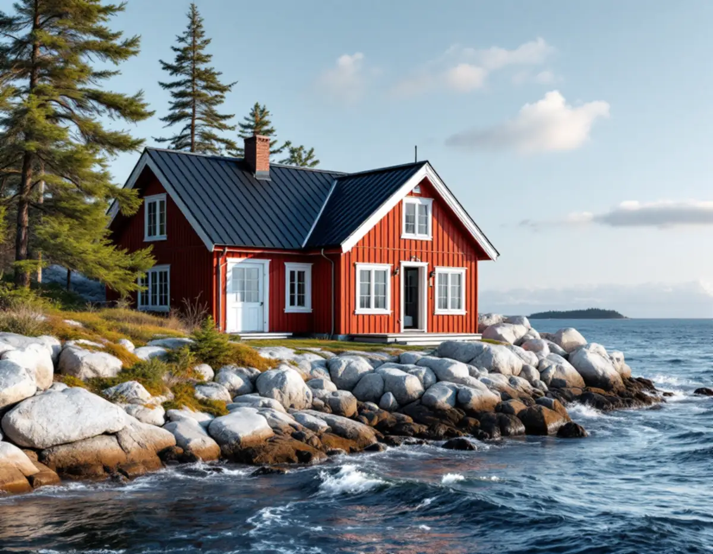
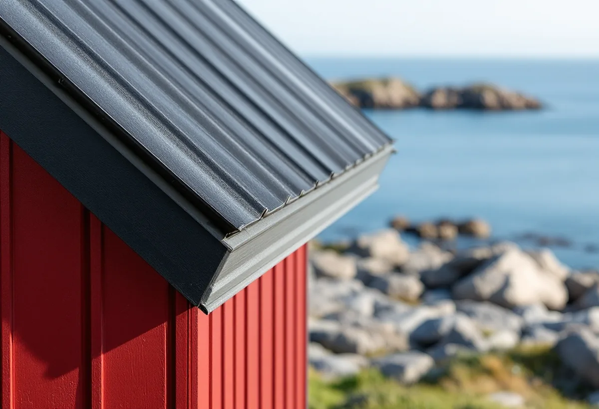

Var ligger huset?
Vi kontrollerar i Värmdökartan om fastigheten ligger i ett riksintresse eller kulturmiljöområde.
Värmdö kommun har fjorton riksintressen för kulturmiljövården och ett 55-tal utpekade kulturmiljöområden, från Gustavsbergs brukssamhälle till fiskarmiljöerna på Möja och skärgårdsbyn Harö. Där krävs bygglov även för ett nytt tak. Geal Entreprenad AB har egna plåtslagare som arbetar i Gustavsberg, Hemmesta, på Ingarö, Djurö och i övriga Värmdö, med gratis platsbesök och skriftligt kostnadsförslag.

Kommunen skriver att Värmdö har 14 områden av riksintresse och cirka 55 utpekade kulturmiljöområden, och att alla räknas som särskilt värdefulla. Riksintressena är utpekade av länsstyrelsen, länsmuseet och Riksantikvarieämbetet och omfattar bland annat Gustavsbergs brukssamhälle, skärgårdsbyarna på Harö, Husarö, Ingmarsö, Svartsö, Gällnö och Hjälmö, fiskarmiljöerna på Möja, Bockö och Lökaön, sommarnöjesmiljön på Grinda och Sandhamn med Grönskär.
Bland de lokala kulturmiljöerna i programmet Skärgårdsbygd, framtaget av Stockholms läns museum och kommunen, nämns Norra Lagnö, Stavsnäs by och Säby på Ingarö. Kommunen ber den som ska bygga i en kulturmiljö att fundera särskilt på material och byggnadssätt, färger, fönster och dörrar och takets form och lutning.
För en plåtslagare innebär det att ett tak i en skärgårdsby inte bara ska vara tätt. Bandbredd, falsens höjd, kulör och hur plåten avslutas vid gavel och takfot är en del av det som ska passa in.

Enligt kommunens sida om fasadändring krävs inget bygglov för fasadändring, nytt tak eller nya fönster på ett en- eller tvåbostadshus eller en komplementbyggnad. Men om fastigheten ligger inom ett kulturhistoriskt särskilt värdefullt område, eller om byggnaden är särskilt värdefull, krävs bygglov för åtgärder som ommålning, nytt tak, nya fönster, solceller och takfönster.
Kommunen skriver också att du behöver göra en anmälan och få startbesked för att underhålla en byggnad som är skyddad i detaljplan eller har särskilt bevarandevärde. Byggnadsminnen och kyrkliga kulturminnen kräver tillstånd från länsstyrelsen. Ligger fastigheten inom strandskyddat område kan dispens behövas.
Kommunantikvarien hjälper gärna till. Kommunen föreslår att du tar en promenad i området, fotograferar fastigheten och mejlar kommunantikvarien innan arbetet planeras. Ska ett takfönster sättas in samtidigt, se takfönster.
Boverket skriver att regn i kombination med vind ökar sannolikheten för att vatten pressas eller sugs in i springor och skarvar, och att risken därför är större där det regnar och blåser mycket. Tak med många vinklar, kupor och takfönster får fler skarvar och anslutningar. Otäta infästningar för solceller, taksäkerhetsutrustning, luckor och huvar nämns som vanliga orsaker till läckage.
Ett hus på en udde eller en klippa ut mot fjärden tar emot väder från flera håll. Där lägger vi extra vikt vid vindskivornas infästning, vid nockens och gavelns beslag och vid att plåten vid takfoten sitter fast även när vinden lyfter underifrån. Genomföringar placeras med tillräckligt avstånd så att de går att täta ordentligt.
Läs mer om skärgårdens tak i stort under takrenovering på Värmdö.
Kommunens broschyr Fritidshusområde i förändring från 2023 beskriver hur tusentals fastigheter i prioriterade förändringsområden ska planläggas och få kommunalt vatten och avlopp. I utredningsskedet kartlägger kommunen bland annat dagvattenflöden. När detaljplanen har vunnit laga kraft och vatten och avlopp är utbyggt kan man söka bygglov.
Det är ofta då ett sommarhus byggs till eller om till helårsbostad, och takets plåt och avvattning behöver räcka för ett större hus. Riktlinjerna säger att områdenas karaktär ska bibehållas och att ny bebyggelse ska anpassas till befintlig bebyggelse och kulturmiljö. Vi planerar därför rännor och stuprör för den nya takytan och väljer plåt som passar det befintliga huset.
En tillbyggnad får ofta ett eget takfall som möter det gamla taket i en vinkel. Där bildas en ränndal eller en anslutning mot väggen, och det är just sådana möten som Boverket pekar ut som känsliga för läckage. Vi bockar plåten i ränndalen och i väggens uppvik så att vattnet leds förbi skarven mellan det gamla och det nya, och ser till att den nya rännan ansluter till stupröret med rätt fall.
Vi kontrollerar i Värmdökartan om fastigheten ligger i ett riksintresse eller kulturmiljöområde.
Tak, beslag, rännor och genomföringar granskas, med särskild uppmärksamhet på de vindutsatta sidorna.
Behövs bygglov eller anmälan tar vi fram underlag om plåtens utförande och kulör.
Du får ett skriftligt förslag där varje del av plåtarbetet står för sig.
Plåten monteras med extra infästning vid gavlar, nock och takfot.
Vi visar arbetet och vad som är bra att kontrollera efter en storm.
Skatteverket räknar ett fritidshus som småhus, och att reparera, rengöra eller byta ut plåttak, hängrännor och stuprör ger rotavdrag om du äger huset och använder det som bostad. Byggnadsställning i samband med arbetet ingår.
Avdraget är högst 30 procent av arbetskostnaden och högst 50 000 kr per person och år, inom 75 000 kr för rot och rut tillsammans. Material och resor ger inget avdrag. Geal drar avdraget direkt på fakturan.
Takets form och antalet genomföringar, om plåten ska tillverkas efter förlaga i en kulturmiljö och hur mycket extra infästning ett utsatt läge kräver. Efter ett gratis platsbesök får du ett skriftligt kostnadsförslag.
Plåttak, hängrännor och beslag.
Plåtslagare i Stockholm →Takbyte, takbesiktning och plåtarbeten.
Takläggare på Värmdö →Skärgård, vind och fritidshus.
Takrenovering på Värmdö →Brunnsvatten, salt och eget avlopp.
Badrumsrenovering på Värmdö →Byggrätt, PFO-områden och strandskydd.
Byggföretag på Värmdö →Sommarvillor, skyddade hus och helårsboende.
Fasadrenovering på Värmdö →Gustavsbergs bevarandevärda fönster.
Fönsterbyte på Värmdö →Fritidshus som blir permanentbostäder.
Golvläggare på Värmdö →Fritidshus, eget avlopp och Gustavsberg.
Köksrenovering på Värmdö →Skärgårdshus, fritidshus och bruksmiljö på Värmdö.
Målare på Värmdö →Fritidshus som blir helårshus.
Snickare på Värmdö →